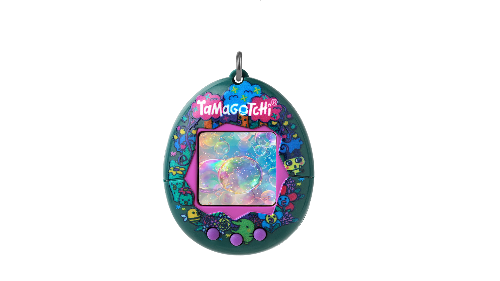

CHARACTER INFO
플라워치
성격: 마음이 부드럽고 털털함 성별: 여자
말버릇: “정해진 말버릇은 없다”
기뻐하면 체리체리치 머리색까지 붉어지는 진한 분홍색 볼을 가지고 있고 머리 위에는 노란색과 초록색 두 송이의 꽃이 있다.
최근 게임에서, 그녀는 머리에 매달린 4개의 새로운 꽃을 가지고 있는데, 그 중 2개는 보통 숨겨져 있다. 눈에 보이는 두 마리는 보통 노란색이고 그녀가 슬플 때 파랗게 변한다.
그녀의 4개의 꽃은 기뻐하면 장미빛으로 변하는데, 숨겨진 두 개의 진짜 색은 알 수 없다. 플라워치는 그녀의 머리에 두 개의 너비 귀를 가지고 있다는 것이 다마고치 Mix 계보를 통해 밝혀졌다.
분홍색, 그림, 자전거 타기를 좋아한다.